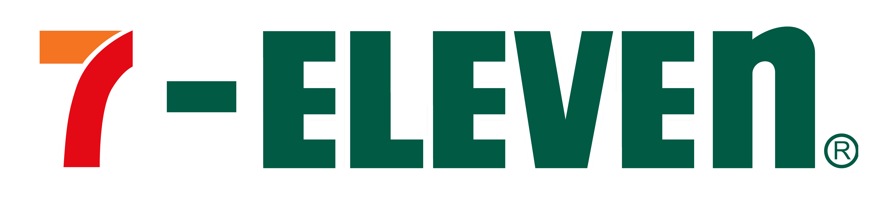

신상품 기획 어시스턴트
최종 업데이트 날짜: 2025-12-31
신상품 기획 네트워크
키워드 추출 자동화
ℹ️ 검색 방법
검색 방법
검색어를 입력하면 AI가 속성을 추론해 줍니다. 기획에 사용할 속성을 선택하세요.
검색어는
최대 3개
까지 추가할 수 있고, 검색어마다
별도 탭
을 만들어 줍니다.
+ 검색어 추가
네트워크 생성
검색어를 추론하고 출발 속성을 선택한 뒤
네트워크 생성
을 눌러주세요.
📌 AI 요약 인사이트
ℹ️ 상세 설명
상세 설명
네트워크를 생성하면, 네트워크 내 핵심 키워드를 바탕으로 신제품 기획에 활용할 키워드를 추천해드립니다.
키워드 종류
흥행
— 비슷한 키워드를 쓴 신상품이 성공한 경우가 많아요
매개
— 어디에 붙여도 두루 잘 어울려요
화제
— 인스타에서 바이럴되기 좋아요
IP
— 콜라보·캐릭터 IP예요
네트워크
속성 키워드
IP
선이 굵을수록 관련성 높음
점선은 관련성 낮음
⛶ 전체화면
✕ 전체화면 닫기
검색어 추론 → 출발점 선택 → 네트워크 생성
네트워크 사용법
AI 인사이트가 추천한 키워드를 네트워크에서 직접 살펴볼 수 있어요. 검색어를 생성하면 네트워크가 그려져요.
키워드를 하나 누르면
그 키워드와 주변 키워드의 정보를 보여줘요.
키워드를 두 개 누르면
네트워크 내에서 두 키워드를 잇는 길과 키워드 간 시너지를 보여드려요.
네트워크 키워드 자동 추출
백엔드 키워드 사전 기준으로 상품 설명문에서 기존 키워드와 신규 키워드를 자동 추출해 업데이트용 CSV로 저장합니다.
추출 결과
CSV 다운로드
결과 초기화
처리 상품 수
0
전체 키워드 수
0
기존 키워드
0
신규 키워드
0
전체 보기
신규 키워드 포함
추출 키워드 없음
단건 입력 또는 CSV 업로드로 키워드를 추출하면 상품별 결과가 표시됩니다.